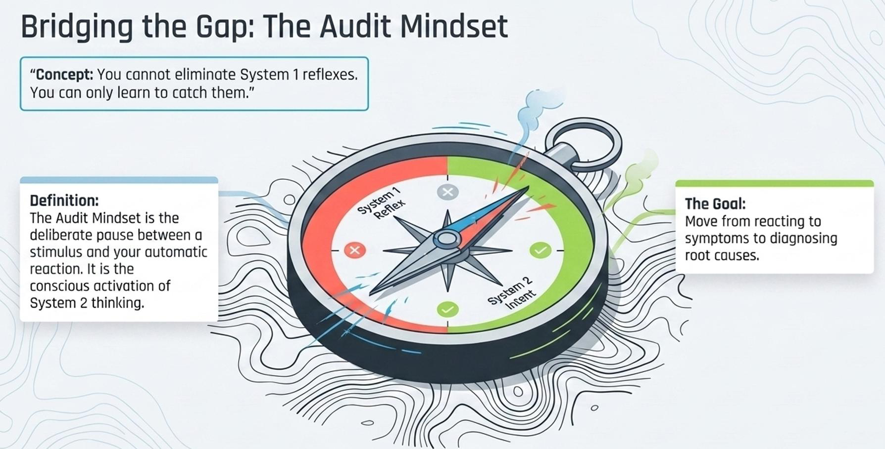

Topic 3: Audit Mindset & Biases
Chủ đề 3: Tư duy kiểm toán & thiên kiến
TS. Thu Nguyễn (Nguyễn Thị Minh Thu) · 31 slide (bản cập nhật)
Quy ước của bản dịch. Mỗi slide là một khối: cột bên trái là nguyên văn tiếng Anh (màu xám), cột bên phải là bản tiếng Việt (màu đen). Nội dung được dịch sát theo từng slide, không lược bỏ.
Thuật ngữ chuyên môn được dịch sang tiếng Việt kèm nguyên bản tiếng Anh trong ngoặc ở lần xuất hiện đầu tiên. Tên riêng, tên tổ chức và trích dẫn học thuật (Kahneman, Yukl & Tracey, Mayer, Davis & Schoorman, RMIT, Zalo) giữ nguyên.
Slide 01
Title
Topic 2: Audit Mindset & Biases
Chủ đề 2: Tư duy kiểm toán & thiên kiến
Dr Thu Nguyen
TS. Thu Nguyễn
Bản gốc đánh số slide là “Topic 2”; giữ nguyên theo nguyên bản. Trong bộ tài liệu này vẫn xếp là Chủ đề 3.
Slide 02
Meet the Facilitator
Meet the Facilitator — Dr Thu Nguyen
Giới thiệu giảng viên — TS. Thu Nguyễn
| Current role Vai trò hiện tại | Senior Program Manager and Lecturer in Entrepreneurship at RMIT University Vietnam | Senior Program Manager và Giảng viên ngành Khởi nghiệp tại Đại học RMIT Việt Nam |
| Qualifications Bằng cấp | PhD in Management Sciences (France); MA in Consultancy & Entrepreneurship (The Netherlands) | Tiến sĩ Khoa học Quản lý (Pháp); Thạc sĩ Tư vấn & Khởi nghiệp (Hà Lan) |
| Experience Kinh nghiệm | Over 20 years of combined industry and academic expertise | Hơn 20 năm kinh nghiệm kết hợp giữa thực tiễn doanh nghiệp và học thuật |
Slide 03
Agenda
Agenda — At the end of this session, you will…
Chương trình — Kết thúc buổi học, bạn sẽ…
- Catch your own biases
- Own a 5-step routine to audit any judgment
- Hear how bias leaks into what you say
- Adapt one message to two very different audiences
- Nhận ra thiên kiến (bias) của chính mình
- Nắm vững quy trình 5 bước để rà soát bất kỳ phán đoán nào
- Nghe được cách thiên kiến rò rỉ vào lời mình nói
- Điều chỉnh cùng một thông điệp cho hai nhóm người nghe rất khác nhau
| 9:10 | Activity 1: Estimation warm-up | Hoạt động 1: Khởi động ước lượng |
| 9:30 | Fast & slow thinking | Tư duy nhanh & tư duy chậm |
| 9:45 | Activity 2: Case Audit the Algorithm | Hoạt động 2: Tình huống “Rà soát thuật toán” |
| 10:20 | Break | Giải lao |
| 10:35 | Activity 3: The Leak | Hoạt động 3: Sự rò rỉ |
| 10:55 | Activity 4: The Influence Lab (optional) | Hoạt động 4: Phòng thí nghiệm gây ảnh hưởng (không bắt buộc) |
| 11:40 | Your Bias Audit Card | Thẻ rà soát thiên kiến của bạn |
Slide 04
Activity 1A · Warm-up
Give me a LOW and a HIGH
Hãy đưa ra một mức THẤP và một mức CAO
Two questions — Write both numbers on paper.
Hai câu hỏi — Viết cả hai con số ra giấy.
Your range — LOW and HIGH, so you are 90% confident the truth sits inside.
Khoảng của bạn — Mức THẤP và mức CAO sao cho bạn tin chắc 90% rằng con số đúng nằm trong khoảng đó.
No gaming — Don't play safe with an unreasonably wide range. Honest 90%.
Không lách luật — Đừng chọn an toàn bằng một khoảng rộng vô lý. Phải là 90% trung thực.
Worked example — “Height of Mount Everest?” MY LOW: 7,000 m · MY HIGH: 10,000 m. “I'm 90% sure the true height is inside that range.”
Ví dụ mẫu — “Đỉnh Everest cao bao nhiêu?” MỨC THẤP: 7.000 m · MỨC CAO: 10.000 m. “Tôi chắc 90% rằng chiều cao thật nằm trong khoảng đó.”
Slide 05
Activity 1A · The questions
Two questions about Zalo
Hai câu hỏi về Zalo
A1 How many people worked at this company exactly five years ago?
A1 Đúng năm năm trước, công ty này có bao nhiêu người làm việc?
A2 What percentage of our engineers joined in the last two years?
A2 Bao nhiêu phần trăm kỹ sư của chúng ta gia nhập trong hai năm gần đây?
Write your LOW and your HIGH for each. 60 seconds.
Viết mức THẤP và mức CAO cho từng câu. 60 giây.
Slide 06
And now
Hands up if you are 90% confident the truth is inside your range.
Giơ tay nếu bạn tin chắc 90% rằng con số đúng nằm trong khoảng của mình.
Keep your hand up only if you'd bet 500,000₫ on your range.
Chỉ giữ tay giơ lên nếu bạn sẵn sàng đặt cược 500.000₫ vào khoảng đó.
Slide 07
Activity 1A · The reveal
You claimed 90%.
Bạn đã tuyên bố là 90%.
A1 1097
A1 1.097
A2 18.82%
A2 18,82%
“Hands up if your range contained it”
“Giơ tay nếu khoảng của bạn chứa con số đó”
Slide 08
Activity 1B
Alex, a mid-level engineer
Alex, một kỹ sư bậc trung
On your table — One page. A promotion-readiness summary for a mid-level engineer on the payments platform team.
Trên bàn của bạn — Một trang giấy. Bản tóm tắt mức độ sẵn sàng thăng chức của một kỹ sư bậc trung thuộc nhóm nền tảng thanh toán.
1 Turn it over and read – alone. 2 minutes. No discussion yet.
1 Lật lại và đọc một mình. 2 phút. Chưa thảo luận.
2 Rate: how ready is Alex? 1 = not ready at all · 10 = fully ready now
2 Chấm điểm: Alex sẵn sàng đến mức nào? 1 = hoàn toàn chưa sẵn sàng · 10 = sẵn sàng ngay lập tức
3 Give your rating number, then stop. Trust your first read. Don't revise it.
3 Đưa ra con số của bạn rồi dừng lại. Tin vào cảm nhận đầu tiên. Đừng sửa lại.
Slide 09
Activity 1B
Same engineer. Two ratings
Cùng một kỹ sư. Hai mức điểm
▲ [X] “top graduate of an elite CS programme”
▲ [X] “thủ khoa của một chương trình khoa học máy tính danh giá”
● [Y] “hired after failing the first interview round”
● [Y] “được tuyển sau khi trượt vòng phỏng vấn đầu tiên”
Slide 10
Your table's flipchart
Start your bias map
Bắt đầu bản đồ thiên kiến của nhóm
| What we just experienced | What it's called | The System 1 shortcut behind it | Where it costs us at work |
|---|---|---|---|
| Điều chúng ta vừa trải qua | Tên gọi của nó (tên nhóm đặt / tên trong nghiên cứu) | Lối tắt của Hệ thống 1 đứng sau nó (không bắt buộc) | Nơi nó gây tổn thất trong công việc |
Fill two rows on the left now – the two things that just happened to you. We'll add more later.
Điền hai dòng ở cột bên trái ngay bây giờ – hai điều vừa xảy ra với bạn. Chúng ta sẽ bổ sung thêm sau.
Slide 11
—
25 x 14
Slide chỉ gồm một phép tính nhẩm, dùng để cho thấy Hệ thống 2 phải được gọi ra một cách có chủ đích.
Slide 12
Mini-input · Kahneman
Two systems, one brain
Hai hệ thống, một bộ não
System 1 – fast
- Automatic, effortless, always on
- Runs on shortcuts and patterns
- Brilliant under routine – predictably wrong under pressure
Hệ thống 1 – nhanh
- Tự động, không tốn sức, luôn hoạt động
- Chạy bằng lối tắt và khuôn mẫu
- Xuất sắc trong việc quen tay – nhưng sai một cách có thể đoán trước khi bị áp lực
System 2 – slow
- Deliberate, logical, effortful
- Lazy: engages only when summoned
- The system your routine will summon on purpose
Hệ thống 2 – chậm
- Có chủ đích, logic, tốn công sức
- Lười: chỉ vào cuộc khi được gọi
- Chính là hệ thống mà quy trình của bạn sẽ chủ động gọi ra
Bias is built-in, not character.
Thiên kiến là thứ được cài sẵn, không phải vấn đề nhân cách.
Slide 13
Answer in 30 seconds
Answer in 30 second
Trả lời trong 30 giây
A bat and ball cost $1.10. The bat costs one dollar more than the ball. How much does the ball cost?
Một cây gậy và một quả bóng có giá 1,10 USD. Cây gậy đắt hơn quả bóng một đô-la. Quả bóng giá bao nhiêu?
All roses are flowers. Some flowers fade quickly. Therefore some roses fade quickly.
Mọi hoa hồng đều là hoa. Một số loài hoa tàn rất nhanh. Vậy nên một số hoa hồng tàn rất nhanh.
Note your bias on flip chart
Ghi lại thiên kiến của bạn lên bảng giấy
Slide 14
The one that matters here
Expert bias
Thiên kiến chuyên gia (expert bias)
Over-trusting technical/expert judgment where it doesn't apply: reading people, weighing effort, judging who's underperforming.
Quá tin vào phán đoán kỹ thuật/chuyên môn ở những chỗ nó không áp dụng được: đọc con người, đánh giá mức độ nỗ lực, phán xét ai đang làm việc kém.
It sounds like
- “If she were really trying, it would be done by now”
- “It's faster if I do it myself.”
- “I don't need to ask – I can see the quality isn't there.”
Nghe sẽ giống như
- “Nếu cô ấy thực sự cố gắng thì giờ đã xong rồi”
- “Tôi tự làm thì nhanh hơn.”
- “Tôi không cần hỏi – tôi nhìn là biết chất lượng chưa đạt.”
Slide 15
—

Slide 16
From problem to solution
The Audit Mindset
Tư duy kiểm toán (audit mindset)
Auditors can't remove bias either. So, they built a discipline.
Kiểm toán viên cũng không loại bỏ được thiên kiến. Vì vậy, họ xây dựng một kỷ luật nghề nghiệp.
Questioning mind · Suspension of judgment · Search for evidence
Tư duy hoài nghi · Tạm hoãn phán xét · Tìm kiếm bằng chứng
Turned inward, it becomes a leadership tool.
Khi hướng vào chính mình, nó trở thành một công cụ lãnh đạo.
Slide 17
Your routine
The 5-Step Bias Self-Audit
Quy trình 5 bước tự rà soát thiên kiến
| 1 | Pause — Is this System 1 talking? What's my time pressure? | Dừng lại — Đây có phải Hệ thống 1 đang lên tiếng? Mình đang chịu áp lực thời gian ra sao? |
| 2 | Evidence — What supports my view? What would change my mind? Am I answering the question actually asked? | Bằng chứng — Điều gì ủng hộ quan điểm của mình? Điều gì sẽ khiến mình đổi ý? Mình có đang trả lời đúng câu hỏi được đặt ra không? |
| 3 | Opposite — Argue the other side for 60 seconds. | Phía đối lập — Lập luận cho phía ngược lại trong 60 giây. |
| 4 | Outside view — What would a neutral colleague say? | Góc nhìn bên ngoài — Một đồng nghiệp trung lập sẽ nói gì? |
| 5 | Decide & log — Make the call; note your weak assumption. | Quyết định & ghi lại — Ra quyết định; ghi chú giả định yếu nhất của mình. |
Slide 18
Activity 2 · Table groups
Audit the Algorithm
Rà soát thuật toán
The decision — Priya, Product Engineer. Your AI assistant drafted her review – and recommends moving the critical Q4 module off her, to a senior engineer or to you, to protect the deadline. Confidence: HIGH
Quyết định — Priya, Product Engineer. Trợ lý AI của bạn đã soạn bản đánh giá của cô ấy – và đề xuất chuyển module quan trọng của quý 4 khỏi cô ấy, giao cho một kỹ sư cấp cao hoặc cho chính bạn, nhằm bảo vệ hạn chót. Mức độ tin cậy: CAO
1 · 4 min · alone Read it. Privately rate: how likely are you to move this work off Priya?
1 · 4 phút · làm một mình Đọc tình huống. Tự chấm điểm riêng: khả năng bạn chuyển phần việc này khỏi Priya là bao nhiêu?
2 · 13 min · table discussion Run the 5-step routine on the recommendation. Audit it like an auditor audits accounts. Note your table average rate before discussion.
2 · 13 phút · thảo luận nhóm Áp dụng quy trình 5 bước lên đề xuất đó. Rà soát nó như kiểm toán viên rà soát sổ sách. Ghi lại điểm trung bình của nhóm trước khi thảo luận.
3 · 4 min · re-rate Rate again. Post your table's before/after on the flip chart.
3 · 4 phút · chấm lại Chấm điểm lần nữa. Dán kết quả trước/sau của nhóm lên bảng giấy.
Slide 19
Debrief
Four flaws
Bốn lỗ hổng
| 1 | Visible ≠ valuable — Slack counts and ticket rank stood in for performance. recency · availability | Thấy được ≠ có giá trị — Số tin nhắn Slack và thứ hạng ticket được dùng thay cho hiệu suất thật. |
| 2 | One voice, echoed — One reviewer, quoted once – replayed into “a well-established pattern”. single-source confirmation | Một tiếng nói, được vang lại — Một người đánh giá, được dẫn một lần – rồi phát lại thành “một khuôn mẫu đã được xác lập rõ”. |
| 3 | The invisible leave — Jan–Apr “zero contribution” was a maternity leave. Not in the AI's data. data artifact | Kỳ nghỉ vô hình — “Không đóng góp gì” từ tháng 1 đến tháng 4 thực chất là kỳ nghỉ thai sản. Dữ liệu của AI không có thông tin đó. |
| 4 | Fluent ≠ right — “Confidence: HIGH” and decisive prose recruit System 1 trust. automation bias | Trôi chảy ≠ đúng — “Mức độ tin cậy: CAO” và lối viết dứt khoát khiến Hệ thống 1 tin ngay. |
Slide 20
The question underneath
Suppose you reassign. Priya keeps her job. The deadline is protected. Nobody complains.
Giả sử bạn chuyển việc. Priya vẫn giữ được công việc. Hạn chót được bảo vệ. Không ai phàn nàn.
What did it cost – and when does that cost appear?
Cái giá phải trả là gì – và cái giá đó xuất hiện khi nào?
An unaudited judgment delivered with great conversation technique is still an unfair conversation.
Một phán đoán chưa được rà soát, dù được truyền đạt bằng kỹ thuật trò chuyện xuất sắc, vẫn là một cuộc trò chuyện thiếu công bằng.
Slide 21
Break
Take a 15-Minute Break — Back at 11:00
Nghỉ giải lao 15 phút — Quay lại lúc 11:00
Slide 22
Activity 3 · Tables, then pairs
The Leak
Sự rò rỉ
Bias doesn't stay in your head. It leaks into what you say, what you leave unsaid, and who you ask.
Thiên kiến không nằm yên trong đầu bạn. Nó rò rỉ vào những gì bạn nói, những gì bạn không nói và cả việc bạn hỏi ai.
8 min · table Lines managers say. Which bias produced it? What does the listener hear? Mark the two you hear most here.
8 phút · nhóm bàn Những câu quản lý hay nói. Thiên kiến nào tạo ra câu đó? Người nghe sẽ hiểu thế nào? Đánh dấu hai câu bạn nghe nhiều nhất ở đây.
5 min · table Rewrite your two – same standard, same honesty, without the bias.
5 phút · nhóm bàn Viết lại hai câu đó – vẫn giữ nguyên chuẩn mực, vẫn thẳng thắn như vậy, nhưng không còn thiên kiến.
7 min · pairs One sentence you actually said last month. Read it aloud. Your partner offers one rewrite.
7 phút · làm theo cặp Một câu bạn đã thực sự nói trong tháng trước. Đọc to lên. Người cùng cặp đề xuất một cách viết lại.
Nothing leaves your pair unless you choose to share it.
Không điều gì ra khỏi phạm vi cặp của bạn trừ khi bạn chủ động chia sẻ.
Slide 23
The Leak · The six lines
Which of these do you hear here?
Bạn nghe thấy câu nào trong số này ở đây?
| 1 | “Just send it to me, I'll fix it quickly.” | “Cứ gửi cho tôi, tôi sửa nhanh thôi.” |
| 2 | “I already know what the problem is – we just need to execute.” | “Tôi biết vấn đề là gì rồi – giờ chỉ cần làm thôi.” |
| 3 | “Let me review it before it goes out.” (every time, forever) | “Để tôi xem lại trước khi gửi đi.” (lần nào cũng vậy, mãi mãi) |
| 4 | “She goes quiet in meetings – she’s probably not confident.” | “Cô ấy im lặng trong các cuộc họp – chắc là thiếu tự tin.” |
| 5 | “Business never understands technical constraints.” | “Bên kinh doanh chẳng bao giờ hiểu các ràng buộc kỹ thuật.” |
| 6 | “It's faster if I do it myself.” | “Tôi tự làm thì nhanh hơn.” |
Slide 24
The Leak · Answers
The six lines, audited
Sáu câu nói, đã được rà soát
| # | The line / Câu nói | The bias underneath / Thiên kiến bên dưới | What the listener hears / Người nghe hiểu là | A rewrite that keeps the standard / Cách nói lại vẫn giữ chuẩn mực |
|---|---|---|---|---|
| 1 | "Just send it to me, I'll fix it quickly" “Cứ gửi cho tôi, tôi sửa nhanh thôi” | Expert bias (quality-standard drift) Thiên kiến chuyên gia (chuẩn chất lượng bị đẩy lệch) | "My work isn't good enough and I won't get better" “Việc của tôi không đủ tốt, và tôi sẽ không khá hơn” | "Walk me through your approach – I'll flag the two riskiest parts and you fix them" “Hãy trình bày cách bạn định làm – tôi sẽ chỉ ra hai phần rủi ro nhất và bạn sửa” |
| 2 | “I already know what the problem is – we just need to execute" “Tôi biết vấn đề là gì rồi – giờ chỉ cần làm thôi” | Confirmation bias (jumping to how before what / why) Thiên kiến xác nhận (nhảy sang “làm thế nào” trước khi rõ “cái gì / vì sao”) | "Don't bring me evidence. Don't tell me I'm solving the wrong problem" “Đừng mang bằng chứng đến. Đừng nói với tôi rằng tôi đang giải sai vấn đề” | "Here's my hypothesis. What would prove me wrong?" “Đây là giả thuyết của tôi. Điều gì sẽ chứng minh tôi sai?” |
| 3 | "Let me review it before it goes out" (every time) “Để tôi xem lại trước khi gửi đi” (lần nào cũng vậy) | Control of how rather than management of outputs Kiểm soát cách làm thay vì quản lý kết quả đầu ra | "I am not trusted, and I never will be" “Tôi không được tin, và sẽ không bao giờ được tin” | "Here's what 'done well' means for this. I'll review exceptions, not everything." “Đây là định nghĩa ‘làm tốt’ cho việc này. Tôi chỉ xem các trường hợp ngoại lệ, không xem tất cả.” |
| 4 | “She goes quiet in meetings, she's probably not confident" “Cô ấy im lặng trong các cuộc họp, chắc là thiếu tự tin” | Fundamental attribution error (single-signal reading) Lỗi quy gán cơ bản (đọc người qua một tín hiệu duy nhất) | (She never hears it; and that's the problem) (Cô ấy không bao giờ nghe được câu đó; và đó chính là vấn đề) | "I've noticed you're quiet in design reviews; what makes it easier or harder to jump in?" “Tôi thấy bạn khá im lặng trong các buổi review thiết kế; điều gì làm bạn dễ hoặc khó lên tiếng hơn?” |
| 5 | "Business never understands technical constraints" “Bên kinh doanh chẳng bao giờ hiểu các ràng buộc kỹ thuật” | Out-group stereotyping / curse of knowledge Định kiến với nhóm ngoài / lời nguyền tri thức | "This manager has already decided we're the obstacle" “Người quản lý này đã kết luận rằng chúng tôi là vật cản” | "What does Business measure? Which of our constraints changes their number?" “Bên kinh doanh đo lường bằng chỉ số nào? Ràng buộc nào của chúng ta làm thay đổi con số đó?” |
| 6 | "It's faster if I do it myself" “Tôi tự làm thì nhanh hơn” | Self-serving attribution / short-horizon bias Quy gán vị kỷ / thiên kiến tầm nhìn ngắn | "My growth is not part of the plan" “Sự phát triển của tôi không nằm trong kế hoạch” | "It's faster this once. What does it cost me by Q4, and who should own this by then?" “Lần này thì nhanh hơn thật. Nhưng đến quý 4 nó khiến tôi trả giá gì, và khi đó ai nên là người phụ trách?” |
Slide 25
The Leak · Debrief
Bias doesn't stay private.
Thiên kiến không chỉ nằm riêng trong đầu bạn.
Your listener never hears the judgment – only the sentence.
Người nghe không bao giờ nghe được phán đoán của bạn – họ chỉ nghe câu bạn nói.
As a technical expert, your judgment was the product.
Khi còn là chuyên gia kỹ thuật, phán đoán của bạn chính là sản phẩm.
As a manager, your judgment is an input – what you say is the product.
Khi làm quản lý, phán đoán chỉ là đầu vào – điều bạn nói ra mới là sản phẩm.
Slide 26
Mini-input
Tactics fit the audience – and the direction
Chiến thuật phải khớp với người nghe – và với hướng tác động
Rational persuasion, consultation and inspirational appeals beat pressure. Upward ≠ downward ≠ lateral. Yukl & Tracey, 1992
Thuyết phục bằng lý lẽ, tham vấn và khơi gợi cảm hứng hiệu quả hơn gây áp lực. Tác động lên cấp trên ≠ xuống cấp dưới ≠ ngang cấp. Yukl & Tracey, 1992
Trust = Ability · Benevolence · Integrity. Credibility is granted by the audience, never assumed. Audit it per relationship. Mayer, Davis & Schoorman, 1995
Niềm tin = Năng lực · Thiện chí · Chính trực. Uy tín là thứ người nghe trao cho bạn, không bao giờ được mặc định là có. Hãy rà soát nó theo từng mối quan hệ. Mayer, Davis & Schoorman, 1995
The bias to beat: “what convinces me will convince them.”
Thiên kiến cần vượt qua: “điều thuyết phục được tôi thì cũng sẽ thuyết phục được họ.”
Slide 27
Activity 4 · The Influence Lab (optional)
Round 1 · Pitch down — The Messy Migration
Assign a boring, high-difficulty task to a skeptical Gen Z developer – without ordering them. Watch for: expert bias
Assign a boring, high-difficulty task to a skeptical Gen Z developer – without ordering them. Watch for: expert bias
Vòng 1 · Thuyết phục xuống dưới — Cuộc di chuyển hệ thống rối rắm
Giao một nhiệm vụ nhàm chán, độ khó cao cho một lập trình viên Gen Z đang hoài nghi – mà không ra lệnh. Lưu ý: thiên kiến chuyên gia
Giao một nhiệm vụ nhàm chán, độ khó cao cho một lập trình viên Gen Z đang hoài nghi – mà không ra lệnh. Lưu ý: thiên kiến chuyên gia
Round 2 · Pitch up — The Bottleneck
Persuade a busy Department Head to lend you a senior designer for two weeks. Watch for: overconfidence
Persuade a busy Department Head to lend you a senior designer for two weeks. Watch for: overconfidence
Vòng 2 · Thuyết phục lên trên — Điểm nghẽn
Thuyết phục một Trưởng bộ phận đang rất bận cho bạn mượn một designer cấp cao trong hai tuần. Lưu ý: sự tự tin thái quá (overconfidence)
Thuyết phục một Trưởng bộ phận đang rất bận cho bạn mượn một designer cấp cao trong hai tuần. Lưu ý: sự tự tin thái quá (overconfidence)
Read your role · 2' → Have the conversation · 6' → Observer names the bias · 4'. Observer watches the manager's bias.
Đọc vai của bạn · 2 phút → Thực hiện cuộc trò chuyện · 6 phút → Người quan sát gọi tên thiên kiến · 4 phút. Người quan sát theo dõi thiên kiến của người quản lý.
Slide 28
Closing
Your Bias Audit Card
Thẻ rà soát thiên kiến của bạn
| 1 | My expert bias — from our table's bias map, the one that costs me most | Thiên kiến chuyên gia của tôi — lấy từ bản đồ thiên kiến của nhóm, cái khiến tôi trả giá nhiều nhất |
| 2 | My audit trigger — where I'll run the 5-step routine | Tín hiệu kích hoạt rà soát — nơi tôi sẽ áp dụng quy trình 5 bước |
| 3 | My leaked line — the sentence I'll stop saying – and what I'll say instead | Câu nói rò rỉ của tôi — câu tôi sẽ ngừng nói – và câu tôi sẽ nói thay vào đó |
| 4 | Into this afternoon — the bias to keep out of my next performance conversation | Mang sang buổi chiều — thiên kiến cần giữ ngoài cuộc trao đổi hiệu suất tiếp theo của tôi |
Slide 29
Close · 10 minutes / individual
You were promoted because your judgment was better than most people's.
Bạn được thăng chức vì phán đoán của bạn tốt hơn phần lớn mọi người.
This morning asked you to audit it – before it becomes a decision about someone else, and before it becomes a sentence you can't take back.
Buổi sáng nay yêu cầu bạn rà soát lại phán đoán đó – trước khi nó trở thành một quyết định về người khác, và trước khi nó trở thành một câu nói không thể rút lại.
“You've audited the judgment. This afternoon, you practise the conversation.”
“Bạn đã rà soát phán đoán. Chiều nay, bạn luyện tập cuộc trò chuyện.”
Slide 30
References
References
Tài liệu tham khảo
- Kahneman, D. and Egan, P., 2011. Thinking, fast and slow (Vol. 1, No. 0, pp. 1-5). New York: Farrar, straus and Giroux.
- Yukl, G. and Tracey, J.B., 1992. Consequences of influence tactics used with subordinates, peers, and the boss. Journal of Applied psychology, 77(4), p.525.
- Mayer, R.C., Davis, J.H. and Schoorman, F.D., 1995. An integrative model of organizational trust. Academy of management review, 20(3), pp.709-734.
- Manoogian III, J. (2016) The Cognitive Bias Codex – 180+ biases, designed by John Manoogian III (jm3). [Online image]. (Accessed: 19 August 2026).
Slide 31
Close
Thank you! — Ready for what’s next
Xin cảm ơn! — Sẵn sàng cho chặng tiếp theo
Position title: Senior program manager | Lecturer Entrepreneurship – TBS – RMIT VN
Name: Thu, Nguyen Thi Minh
Email address: thu.nguyenthiminh@rmit.edu.vn
Name: Thu, Nguyen Thi Minh
Email address: thu.nguyenthiminh@rmit.edu.vn
Chức danh: Senior Program Manager | Giảng viên ngành Khởi nghiệp – TBS – RMIT VN
Họ tên: Nguyễn Thị Minh Thu
Email: thu.nguyenthiminh@rmit.edu.vn
Họ tên: Nguyễn Thị Minh Thu
Email: thu.nguyenthiminh@rmit.edu.vn
Topic 3 · Audit Mindset & Biases
Bản đối chiếu Anh – Việt